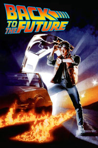

Why use version control
There are many reasons to use version control, and some of these may only become apparent after you have incorporated it into your workflow (it’s a bit like “why use R” or “why document your code”). However, we can immediately identify a set of advantages that are very common.
Most of these come from having a fossil record that captures the evolution of your project (including code, data, documentation, analyses, figures, talks, etc).

This fossil record, or project history, is a series of revisions that connect to each other between the present and the start of the project. At any time you can go back to previous versions, see what you did, and run the code as though you have stepped back in time.

Having a good fossil history has numerous possible uses :
-
You noticed that your code is doing odd things now and didn’t used to. Look at and run a version from the last known good code and try to work out what changed (after this, you should write a unit test – we’ll cover this in a couple of weeks).
-
You deleted some code and want to get it back. This has a less obvious, but much more common (and perhaps more important) advantage; you will be more likely to delete old code rather than commenting it out, leaving you with shorter, more readable scripts.
-
You want to show your supervisor what you did last week.
-
Inversely, on a collaborative project, see what your collaborators wrote last week.
-
You reformatted everything from numbered citation styles to author-year after being rejected from journal A and sending your paper to journal B. Journal B didn’t want the paper anyway, so you can get the previous version back.
-
You want to experiment and try something that might break huge pieces of your project, and know that you can back out if things go awry.
-
Similarly, you want to try a couple of different strategies for solving a problem and review which one you like best (or show them to someone else).
-
Gives you an audit-able project history; you know when you did what you did.
The other great reason for using version control is that it allows for effective and transparent collaboration among small or large groups of scientists.
“GitHub has empowered a new generation of people to collaborate, create, produce.” bit.ly/13JH7VL
— Karthik Ram (@_inundata) March 7, 2013
You are already using version control
Whether you recognise it or not, you are most likely already using some form of version control to achieve some of the advantages outlined above. This might include
- Commented out bits of code / text
- Files with numbers afterwards (
thesis_v1.doc,thesis_v2.doc,thesis_final.doc,thesis_final2.doc, etc) (like in this hilarious Phd Comic) - Every so often you zip up the whole project directory and save it with the date appended to the filename.
Most ecologists we know have adopted at least one of these techniques for doing version control.
In addition, you’ll often see people suggesting putting headers like this in your code file:
1 2 3 | |
Sometimes you’ll even see changelogs embedded in these.
The problem with this is that it’s repetitive and boring, it’s difficult to extract the information easily (e.g., get me all the files I modified in the last month), there is no checking on the contents of the fields (dates in the future, forgetting to update dates, inconsistent names, email addresses). The point of these headers is nice — keep track of who did what and when, but this is far easier to achieve under a good version control system.
Another thing you’ll find in many people’s code is large chunks of old code, commented-out because you think you might need it it again one day.
There is a better way
Coders - use version control, it rocks. Big thanks to @phylorich for introducing me to git. Starter’s guide: git-scm .com/book/en/Gettin…
— Daniel Falster (@adaptive_plant) November 12, 2012
Love Git- best version control out there…@repotodd: I’m learning how to push it with Try Git!bit.ly/TryGit via @codeschool
— Jennie Behave (@Jennie_Behave) December 27, 2012
Version control is not a back up
A good version control system does not substitute for a good backup system. Backing up offers a complementary set of functions that only partially overlap with those offered by version control. In general, you need both.
I have all my projects under version control, and my whole documents directory under backup. If my computer fails, I immediately copy my documents directory from the backup to a new computer. I only need to get the last version though. On the other hand, at any time I can easily look back through the history of any project and see the work. For some projects, the last modification was months ago, while most backup system will be seriously thinning by this point (moving to monthly snapshots at best, and you probably have to pay for that).
Other systems, like Dropbox, are more like backups, as they do not store your project history.
Do I really need something so complicated?
It’s true that git has a reputation for being hard to learn:
They say git gets easier once you get the basic idea that branches are homeomorphic endofunctors mapping submanifolds of a Hilbert space.
— Kornel (@pornelski) March 25, 2013
It involves:
- New concepts
- Some geeky tools
- A bit of hard work.
But believe us, it is worth it. One of the things that will make learning git challenging for many ecologists is that most resources (e.g., the excellent git book) assume that you are coming from a background of using CVS, SVN or some other centralised version control system with a nasty abbrevo. Therefore, they expect you to already be thinking in one way and then show you how to translate those ideas into git’s ideas.
In a way you’re lucky, as you don’t have to learn a bunch of stuff and then unlearn it (e.g., see here). Some of the things that git does just make sense with cheaper (and more decentralised) bandwidth, disk space, and computing power than the systems that were developed in the past.
If the last two paragraphs meant very little too you, that’s good. It means we have a nice clean blank slate on which to work.
Let’s begin.
Contributed my first bit of code to a git repo yesterday, I love it! github.com/mexitek/phpCol… @github @mexitek
— Daniel Pataki (@danielpataki) February 16, 2013